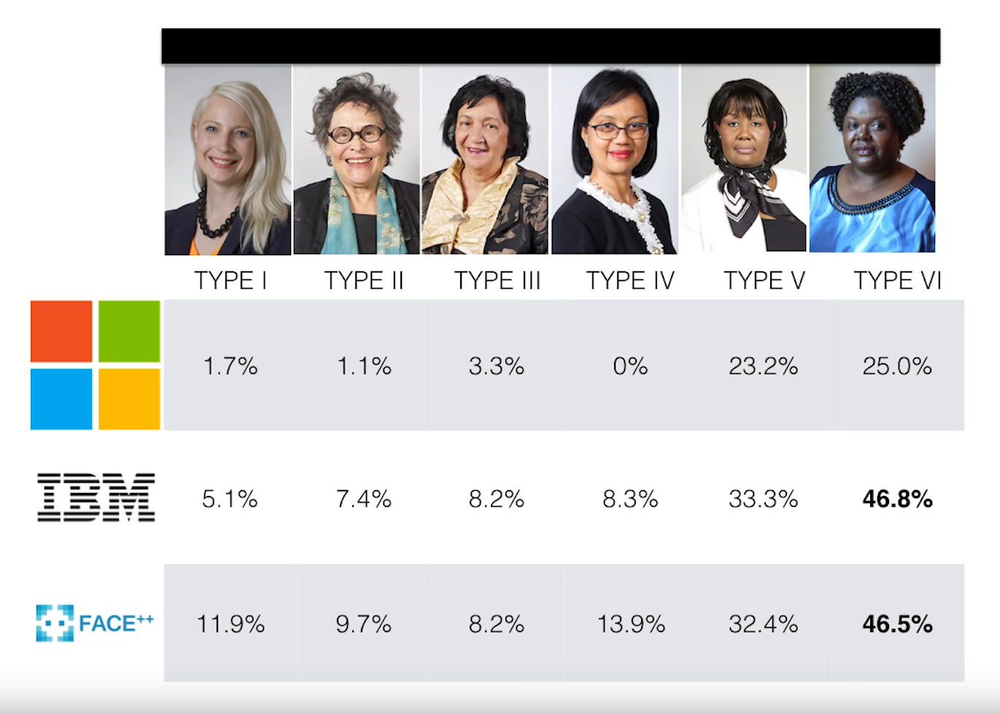
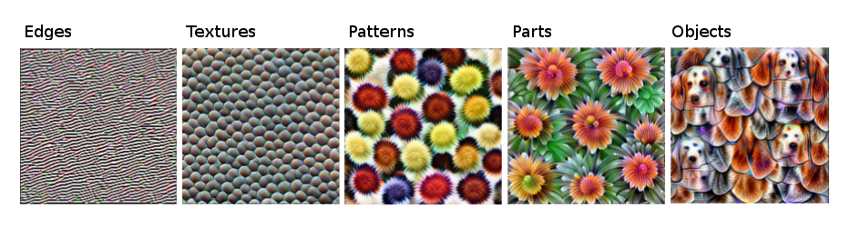

<!doctype html>
<html lang="en">
<head>
<meta charset="utf-8">
<!-- CUSTOMIZE THIS! -->
<title>Einführung in die Digital Humanities</title>
<meta name="author" content="Christof Schöch">
<!-- END -->
<meta name="description" content="Slides">
<meta name="apple-mobile-web-app-capable" content="yes">
<meta name="apple-mobile-web-app-status-bar-style" content="black-translucent">
<meta name="viewport" content="width=device-width, initial-scale=1.0, maximum-scale=1.0, user-scalable=no, minimal-ui">
<link rel="stylesheet" href="css/reveal.css">
<link rel="stylesheet" href="css/theme/simple.css" id="theme">
<!-- Code syntax highlighting -->
<link rel="stylesheet" href="lib/css/zenburn.css">
<!-- Printing and PDF exports -->
<script>
var link = document.createElement( 'link' );
link.rel = 'stylesheet';
link.type = 'text/css';
link.href = window.location.search.match( /print-pdf/gi ) ? 'css/print/pdf.css' : 'css/print/paper.css';
document.getElementsByTagName( 'head' )[0].appendChild( link );
</script>
<!--[if lt IE 9]>
<script src="lib/js/html5shiv.js"></script>
<![endif]-->
</head>


<body>
<div class="reveal">
<div class="slides">
  <section data-markdown="" 
           data-separator="^\n--\n" 
           data-separator-vertical="^\n---\n" 
           data-charset="utf-8" 
           data-background-image="img/basics/uni-trier-mini.png" 
           data-background-size="50px" 
           data-background-position="top right">
<script type="text/template">

# Ethik in Informatik und Digital Humanities
<br/>
<br/>
<br/>
<br/>
<br/>
<br/>Vorlesung *Einführung in die Digital Humanities*
<br/>MSc Digital Humanities | Wintersemester 2020/21
<br/>
<br/>Prof. Dr. Christof Schöch
<br/>
<hr/>
<br/>


--
## (1) Einstieg:<br/>Wissenschaft und Verantwortung


---
### Anstoß: Timnit Gebru


https://twitter.com/timnitGebru/status/1334881120920498180


---
### Freiheit und Verantwortung
* Wissenschaftliche Freiheit ist ein hohes Gut <!-- .element: class="fragment" data-fragment-index="1" -->
* Aber: aus Freiheit ergibt sich Verantwortung <!-- .element: class="fragment" data-fragment-index="2" -->
* Daher: Große Bedeutung der Wissenschaftsethik <!-- .element: class="fragment" data-fragment-index="3" -->
* Spezieller Fall: Ethik der Digitalisierung  <!-- .element: class="fragment" data-fragment-index="4" -->

---
### Grundlagen ethischer Entscheidung
* Folgen des persönlichen Rechtsgefühls
* Maximierung des gesellschaftlichen Nutzens
* Aus ethischen Prinzipien abgeleitete Entscheidungen
  * Menschenwürde
  * Freiheit, Gleichheit, Gerechtigkeit
  * Solidariät
  * Toleranz


---
### Warum gerade Digitalisierung?  
* Digitalisierung und Informatik 
  * ... entwickeln sich schnell (Regulierungslücke) 
  * ... betreffen viele Menschen in vielen Bereichen (Impact)
  * ... betreffen Menschen in wichtigen Dingen ("high stakes scenarios")
  * ... sind für Betroffene nicht verständlich (Intransparenz) 


---
### Ethik und Digitalisierung
&nbsp;&nbsp;&nbsp;&nbsp;&nbsp;&nbsp;


---
### Aspekte von Ethik in Informatik<br/>und Digital Humanities
1. Biases in Datensätzen und Algorithmen
1. Digitalisierung und Privatsphäre
1. Verantwortung und Künstliche Intelligenz
1. Erklärbarkeit von Deep Learning
1. Ökologische Nachhaltigkeit bei Big Data 
1. Diversität der Akteure


--
## (2) Biases in Datensätzen und Algorithmen


---
### Beispiel: Face Recognition


https://news.mit.edu/2018/study-finds-gender-skin-type-bias-artificial-intelligence-systems-0212 ; Buolamwini and Gebru 2018


---
### Beispiel DH: Reproduktion von Stereotypen


Rybicki 2015, https://academic.oup.com/dsh/article-abstract/31/4/746/2748261


---
### Beispiel DH: Diversity Paradox in ELTeC
<a href="img/E14/eltec.png"></a>

https://distantreading.github.io/ELTeC/


--
## (3) Digitalisierung und Privatsphäre


---
### Beispiel: De-Anonymisierung


Siehe Jedrzejczyk et al. 2009

---
### Beispiel DH: Galbraith / Rowling
&nbsp;

Juola 2015, https://academic.oup.com/dsh/article/30/suppl_1/i100/363234


--
## (4) Moralische Verantwortung und Künstliche Intelligenz

---
### Beispiel: Verantwortung für Unfälle selbstfahrender Autos


https://electrek.co/2016/07/01/understanding-fatal-tesla-accident-autopilot-nhtsa-probe/

---
### Beispiel DH: Autorschaft von Gestapo-Berichten


--
## (5) Erklärbarkeit von Deep Learning


---
### Beispiel: Rückfallrisiko


Angwin et al. 2016, https://www.propublica.org/article/machine-bias-risk-assessments-in-criminal-sentencing


---
### Beispiel DH: <br/>Interpretierbarkeit statt Performanz 


https://christophm.github.io/interpretable-ml-book/cnn-features.html


--
## (6) Ökologische Nachhaltigkeit<br/>bei Big Data-Anwendungen


---
### Beispiel: Trainieren von großen Sprachmodellen


https://www.spglobal.com/marketintelligence/en/news-insights/trending/HyvwuXMO9YgqHfj7J6tGlA2

---
### Beispiel DH: <br/>Die DH Conference


https://adho.org/conference


--
## (7) Diversität der Akteure

---
### Beispiel: Timnit Gebru bei Google


https://www.sueddeutsche.de/digital/gebru-google-alphabet-kuenstliche-intelligenz-ki-ethik-silicon-valley-1.5146265


---
### Beispiel DH: Vortrag in Shanghai


http://dh2020.library.sh.cn/en


--
## Abschluss


---
### Lektürehinweise
<small>

**Referenzlektüre**
* Timnit Gebru: "How To Stop Artificial Intelligence From Marginalizing Communities?" *TEDx College Park*, 2018. URL: https://www.youtube.com/watch?v=PWCtoVt1CJM


**Vertiefende Darstellungen**
* Mark Coeckelbergh: *AI Ethics*. Boston: MIT Press, 2020. 
* Safiya Umoja Noble. *Algorithms of Oppression. How Search Engines Reinforce Racism*. New York: New York University Press, 2018. 
* Katharina Zweig. *Ein Algorithmus hat kein Taktgefühl*. München: Heyne, 2019. 
* Cathy O’Neil. *Weapons of Math Destruction: How Big Data Increases Inequality and Threatens Democracy*. New York: Crown, 2016.


</small>


---
### Bibliographie
<small>

* Buolamwini, Joy, and Timnit Gebru. “Gender Shades: Intersectional Accuracy Disparities in Commercial Gender Classification.” In Conference on Fairness, Accountability and Transparency, 77–91, 2018.
* Denton, Emily, Ben Hutchinson, Margaret Mitchell, Timnit Gebru, and Andrew Zaldivar. “Image Counterfactual Sensitivity Analysis for Detecting Unintended Bias.” ArXiv:1906.06439 [Cs, Stat], October 3, 2020. http://arxiv.org/abs/1906.06439.
* Raji, Inioluwa Deborah, Timnit Gebru, Margaret Mitchell, Joy Buolamwini, Joonseok Lee, and Emily Denton. “Saving Face: Investigating the Ethical Concerns of Facial Recognition Auditing.” In Proceedings of the AAAI/ACM Conference on AI, Ethics, and Society, 145–151. AIES ’20. New York, NY, USA: Association for Computing Machinery, 2020. https://doi.org/10.1145/3375627.3375820.
* Gebru, Timnit, Jamie Morgenstern, Briana Vecchione, Jennifer Wortman Vaughan, Hanna Wallach, Hal Daumé III, and Kate Crawford. “Datasheets for Datasets.” ArXiv Preprint ArXiv:1803.09010, 2018.
* Jedrzejczyk, Lukasz, Blaine A. Price, Arosha K. Bandara, Bashar Nuseibeh, W. Hall, and M. Keynes. “I Know What You Did Last Summer: Risks of Location Data Leakage in Mobile and Social Computing.” Department of Computing Faculty of Mathematics, Computing and Technology The Open University, 2009, 1744–1986.
* Juola, Patrick. “The Rowling Case: A Proposed Standard Protocol for Authorship Attribution.” Digital Scholarship in the Humanities 30, no. suppl. 1 (2015): 100–113. https://doi.org/10.1093/llc/fqv040.
* Angwin, Julia, Jeff Larson, Surya Mattu, and Lauren Kirchner. “Machine Bias , Jeff Larson, Surya Mattu and Lauren Kirchner.” ProPublica, 2016. https://www.propublica.org/article/machine-bias-risk-assessments-in-criminal-sentencing?token=xbvF5KLcDIV6vr6B2AF9D0LlUK_IwLni.
* Malte Rehbein und Christian Thies: "Ethik". *Digital Humanities: Eine Einführung*, hg. von Fotis Jannidis, Hubertus Kohle und Malte Rehbein. Stuttgart: Metzler, 2017, S. 353-357.

</small>

---
<br/>
<br/>
<br/>
<br/>
<br/>Christof Schöch, 2020
<br/>http://www.christof-schoech.de
<br/>
<hr/>
Lizenz: [Creative Commons Attribution 4.0](https://creativecommons.org/licenses/by/4.0/)
<br/>


</script>

<!-- DON'T TOUCH UNLESS YOU KNOW WHAT YOU'RE DOING :-) -->
</div>
<script src="lib/js/head.min.js"></script>
<script src="js/reveal.js"></script>
<script>
// Full list of configuration options available at:
// https://github.com/hakimel/reveal.js#configuration
Reveal.initialize({
    controls: true,
    progress: true,
    history: true,
    center: false,
    transition: 'slide', // none/fade/slide/convex/concave/zoom
    // Optional reveal.js plugins
    dependencies: [
        { src: 'lib/js/classList.js', condition: function() { return !document.body.classList; } },
        { src: 'plugin/markdown/marked.js', condition: function() { return !!document.querySelector( '[data-markdown]' ); } },
        { src: 'plugin/markdown/markdown.js', condition: function() { return !!document.querySelector( '[data-markdown]' ); } },
        { src: 'plugin/highlight/highlight.js', async: true, callback: function() { hljs.initHighlightingOnLoad(); } },
        { src: 'plugin/zoom-js/zoom.js', async: true },
        { src: 'plugin/notes/notes.js', async: true }
        ]
    });
Reveal.configure({ slideNumber: true });
</script>
</body>
</html>
